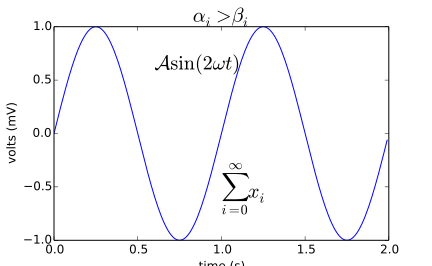
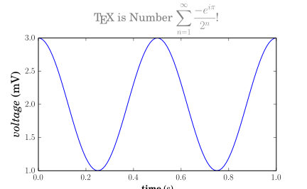

B Python 绘图
B.1 matplotlib
先安装必要的模块
在 R Markdown 中生成PDF需要如下tex包
默认使用 STIX 数学字体 和 DejaVu Sans 英文字体，如图 B.1 所示
import numpy as np
import matplotlib.pyplot as plt
plt.switch_backend('agg') # Very Important in R Markdown
t = np.arange(0.0, 2.0, 0.01)
s = np.sin(2*np.pi*t)
plt.plot(t,s)
plt.title(r'$\alpha_i > \beta_i$', fontsize=20)
plt.text(1, -0.6, r'$\sum_{i=0}^\infty x_i$', fontsize=20)
plt.text(0.6, 0.6, r'$\mathcal{A}\mathrm{sin}(2 \omega t)$',
fontsize=20)
plt.xlabel('time (s)')
plt.ylabel('volts (mV)')
plt.show()
# plt.savefig('math-in-plot.png', bbox_inches='tight', dpi = 300)
# plt.savefig('math-in-plot.pdf', bbox_inches='tight')

图 B.1: 数学公式
- dpi 分辨率，越大图像越清晰，对矢量图形无效
- bbox_inches 去除图形周边空白区域
Python 的 matplotlib 模块没有叫
cairo_pdf 的保存设备，所以此处设置为 dev = "pdf"，它支持的图片格式有 eps, pdf, pgf, png, ps, raw, rgba, svg, svgz
Windows 下保存的 PDF 图片需要用 gs 嵌入字体才可以，不然会出现无法显示 XX 字体的错误，假设在 R 环境中，只需如下两行命令即可
# Needed only on Windows - run once per R session
# Adjust the path to match your installation of Ghostscript
Sys.setenv(R_GSCMD = "C:/Program Files/gs/gs9.23/bin/gswin64c.exe")
embedFonts(file = "math-in-plot.pdf", outfile = "math-in-plot-embed.pdf")如图 B.2
from __future__ import unicode_literals
import numpy as np
import matplotlib
matplotlib.rcParams['text.usetex'] = True
matplotlib.rcParams['text.latex.unicode'] = True
import matplotlib.pyplot as plt
plt.switch_backend('agg') # Very Important in R Markdown
t = np.linspace(0.0, 1.0, 100)
s = np.cos(4 * np.pi * t) + 2
fig, ax = plt.subplots(figsize=(6, 4), tight_layout=True)
ax.plot(t, s)
ax.set_xlabel(r'\textbf{time (s)}')
# ax.set_ylabel(r'\textit{Velocity}(\N{DEGREE SIGN}/sec)', fontsize=16)
ax.set_ylabel(r'\textit{Velocity}($^{\circ}$/sec)', fontsize=16)
ax.set_title(r'\TeX\ is Number $\displaystyle\sum_{n=1}^\infty'
r'\frac{-e^{i\pi}}{2^n}$!', fontsize=16, color='r')
plt.show()
图 B.2: 本真的公式样式
基本用法 http://qiangbo.space/2018-04-06/matplotlib_l1/
如果系统有安装其它字体，可以设置你喜欢的字体
font.family : serif
font.serif : Times, Palatino, New Century Schoolbook, Bookman, Computer Modern Roman
font.sans-serif : Helvetica, Avant Garde, Computer Modern Sans serif
font.cursive : Zapf Chancery
font.monospace : Courier, Computer Modern Typewriter
text.usetex : true#from matplotlib import rc
#rc('font',**{'family':'sans-serif','sans-serif':['Helvetica']})
## for Palatino and other serif fonts use:
#rc('font',**{'family':'serif','serif':['Palatino']})
#rc('text', usetex=True)
import numpy as np
import matplotlib.pyplot as plt
plt.switch_backend('agg') # Very Important in R Markdown
# Example data
t = np.arange(0.0, 1.0 + 0.01, 0.01)
s = np.cos(4 * np.pi * t) + 2
plt.rc('text', usetex=True)
plt.rc('font', family='serif')
# plt.rc('font', family='sans-serif')
plt.plot(t, s)
plt.xlabel(r'\textbf{time} (s)')
plt.ylabel(r'\textit{voltage} (mV)',fontsize=16)
plt.title(r"\TeX\ is Number "
r"$\displaystyle\sum_{n=1}^\infty\frac{-e^{i\pi}}{2^n}$!",
fontsize=16, color='gray')
# Make room for the ridiculously large title.
plt.subplots_adjust(top=0.8)
# plt.savefig('tex_demo')
plt.show()

图 7.4: Python数学字体设置
B.2 seaborn
- seaborn: statistical data visualization http://seaborn.pydata.org/
Seaborn is a Python visualization library based on matplotlib. It provides a high-level interface for drawing attractive statistical graphics.
- statsmodels
B.3 pyglet
处理音视频文件
B.4 mayavi
三维图形
B.5 bokeh
R Markdown 暂不支持动态 Python 图形的展示
# https://bokeh.pydata.org/en/latest/docs/gallery/joyplot.html
from numpy import linspace
from scipy.stats.kde import gaussian_kde
from bokeh.io import output_file, show
from bokeh.models import ColumnDataSource, FixedTicker, PrintfTickFormatter
from bokeh.plotting import figure
from bokeh.sampledata.perceptions import probly
import colorcet as cc
output_file("joyplot.html")
def joy(category, data, scale=20):
return list(zip([category]*len(data), scale*data))
cats = list(reversed(probly.keys()))
palette = [cc.rainbow[i*15] for i in range(17)]
x = linspace(-20,110, 500)
source = ColumnDataSource(data=dict(x=x))
p = figure(y_range=cats, plot_width=900, x_range=(-5, 105), toolbar_location=None)
for i, cat in enumerate(reversed(cats)):
pdf = gaussian_kde(probly[cat])
y = joy(cat, pdf(x))
source.add(y, cat)
p.patch('x', cat, color=palette[i], alpha=0.6, line_color="black", source=source)
p.outline_line_color = None
p.background_fill_color = "#efefef"
p.xaxis.ticker = FixedTicker(ticks=list(range(0, 101, 10)))
p.xaxis.formatter = PrintfTickFormatter(format="%d%%")
p.ygrid.grid_line_color = None
p.xgrid.grid_line_color = "#dddddd"
p.xgrid.ticker = p.xaxis[0].ticker
p.axis.minor_tick_line_color = None
p.axis.major_tick_line_color = None
p.axis.axis_line_color = None
p.y_range.range_padding = 0.12
show(p)B.6 plotly
商业图形库